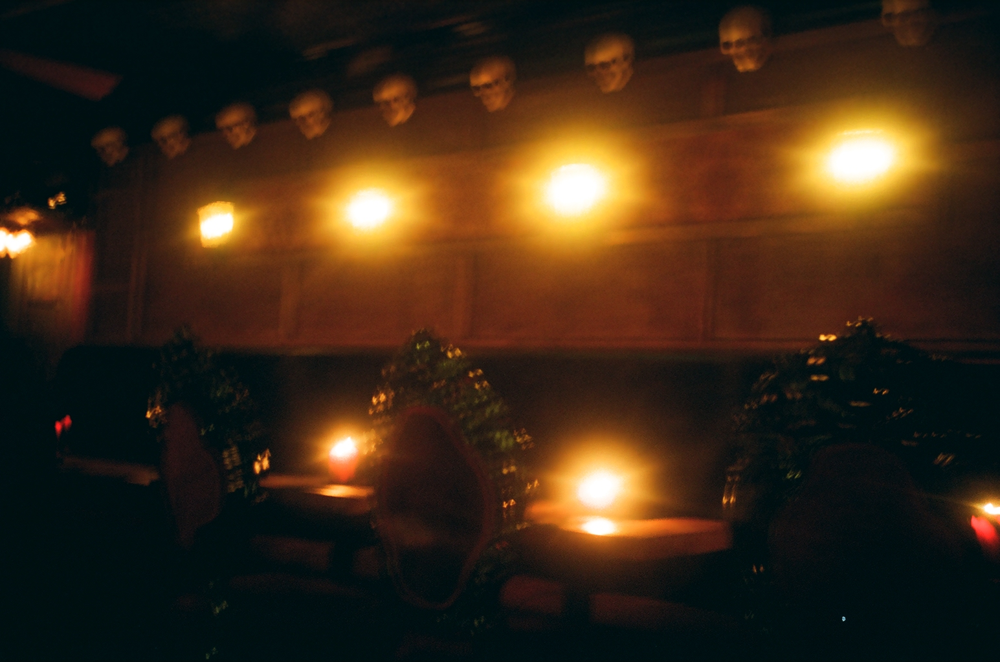
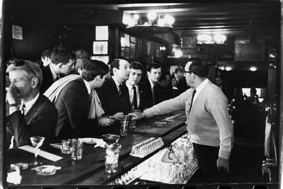

Bowery Boys. “The Sip-in of 1966: Celebrating Julius’ Bar, New York’s Newest Landmark.” The Bowery Boys: New York City History, 13 Jan. 2023, www.boweryboyshistory.com/2023/01/sip-in-shanigans-before-stonewall-there.html. Accessed 23 Feb. 2023.
Carter, David. Stonewall: The Riots That Sparked the Gay Revolution. St. Martin’s Press, 2004.
Chauncey, George. Gay New York: The Making of the Gay Male World, 1890-1940. Flamingo, 1995.
Feinberg, Leslie. Stone Butch Blues. Leslie Feinberg, 1993.
Frank Leon Roberts, “There’s No Place Like Home: A History of House Ball Culture,” Wiretap, 6 June 2007.
Holland, Brynn. “How the Mob Helped Establish NYC’s Gay Bar Scene.” HISTORY, 22 June 2017, www.history.com/news/how-the-mob-helped-establish-nycs-gay-bar-scene.
Iovannone, Jeffry J., "Beyond Stonewall: The Mattachine Society of the Niagara Frontier and Gay Liberation" (2019). Assorted Publications. 1.
McFadden, Robert D. “Dick Leitsch, Whose ‘Sip-In’ Was a Gay Rights Milestone, Dies at 83.” The New York Times, 23 June 2018, www.nytimes.com/2018/06/22/obituaries/dick-leitsch-dead.html.
New York State. “Laws of New York, 1923; Article 70; Disorderly Conduct.” Laws of the State of New York Passed at the Sessions of the Legislature. HathiTrust, s.n., 1923, babel.hathitrust.org/cgi/pt?id=uc1.b4378092&view=1up&seq=973. Accessed 23 Feb. 2023.
New York State Appellate Division. “F & C Holding Corp. v. New York State Liquor Authority.” Records & Briefs. Google Books, vol. 237, www.google.com/books/edition/Records_Briefs_New_York_State_Appellate/7OMyduaROtUC?hl=en&gbpv=0. Accessed 23 Feb. 2023.
New York State Appellate Division. “The Beeshos Restaurant, Inc. v. New York State Liquor Authority.” Records & Briefs. Google Books, vol. 158, www.google.com/books/edition/New_York_Supreme_Court_Appellate_Divisio/yIS3D-U_VWcC?hl=en&gbpv=1. Accessed 23 Feb. 2023.
New York Supreme Court Appellate Division First Department. “The People of the State of New York v. Antonio Bellavicini.” Court of Appeals. Google Books, vol. 81, 1916, www.google.com/books/edition/In_The_Court_of_Appeals_of_the_State_of/Fv_c-5jS1coC?hl=en&gbpv=0. Accessed 23 Feb. 2023.
Pflaumer, Erin. “LGBTQ+ Bar That Was Site of 1966 ‘Sip-In’ given Landmark Status by New York City.” Www.cbsnews.com, 6 Dec. 2022, www.cbsnews.com/news/julius-bar-landmark-new-york-city-sip-in/. Accessed 23 Feb. 2023.
“POLICE ARE ADDED in WASHINGTON SQ.; Patrols Assigned to Park to Prevent Undesirables from Molesting Patrons THREE SHIFTS ORDERED Democratic District Chiefs Plan to Ask Murphy to Put More Men in ‘Village.’” The New York Times, 5 Oct. 1964, timesmachine.nytimes.com/timesmachine/1964/10/05/286159092.html?pageNumber=35. Accessed 6 Mar. 2023.
Roberts, Ben. “Gay New York: From Bars to Bathhouses.” Dissenting Voices, Aug. 2014, soar.suny.edu/handle/20.500.12648/2710. Accessed 22 Feb. 2023.
Rosen, Steven A. “Police Harassment of Homosexual Women and Men in New York City 1960-1980.” Columbia Human Rights Law Review, vol. 12, no. 2, 1980, pp. 159–90.
Ryan, Hugh. “Inventing, and Policing, the Homosexual in Early 20th C. NYC.” The Gotham Center for New York City History, 4 Apr. 2017, www.gothamcenter.org/blog/inventing-and-policing-the-homosexual-in-early-20th-c-nyc. Accessed 22 Feb. 2023.
Sibilla, Nick. “How Liquor Licenses Sparked the Stonewall Riots.” Reason.com, 28 June 2015, reason.com/2015/06/28/how-liquor-licenses-sparked-stonewall/.
Stephens, Lannyl. “The Mob and the Roots of the Stonewall Uprising.” Village Preservation, 24 June 2019, www.villagepreservation.org/2019/06/24/the-mob-and-the-roots-of-the-stonewall-uprising/.
Teal, Donn. The Gay Militants. New York, Stein and Day, 1971.
Wills, Matthew. “Gay Bars and Gay Rights.” JSTOR Daily, 25 June 2021, daily.jstor.org/gay-bars-and-gay-rights/.
audio
The audio for this project consists of clips from interviews with members of the LGBT community recorded by The Stonewall Oral History and Archive project. The interviewees heard in Queer Degenerates are as follows:
Steve Ashkinazy; Perry Brass; Robert E Bryan; Marcie Chase; Victoria Cruz; Alex Feingold; Donald Gallagher; Michael Lavery; Charles Leslie; Leonard Maran; Ty Martin; Marshall Mason; Virginia Moraweck; Tree Sequoia; Dr. Charles Silverstein; Rich Wandel; and Randy Wicker.
images
bossa nova civic club. 2022. alexa sacks-wilner

café de l’enfer. 2022. sam shelffo-mcgrath
café de l’enfer. 2022. sam shelffo-mcgrath
on "that" street. 1932. charles duluth

john timmins, dick leitsch, craig rodwell, & randy wicker being refused service at julius' bar. 1966. fred mcdarrah (getty images)
"policemen dressed as women for a stakeout." 1960. los angeles public library (herald examiner collection)
Still from Frank Simon’s ‘The Queen.’ Photo credit: Lewis Allen Collection/Harry Ransom Center/The University of Texas at Austin
"ray (or rae) bourbon enters court." 1956. los angeles public library (herald examiner collection)
"franke goode, 17, left; francis j. socwell, 18. a couple of 'girls' who landed behind bars." 1946. los angeles public library (herald examiner collection)
"posed as girls." 1944. howard ballew. los angeles public library (herald examiner collection)
"posed as a girl." 1944. howard ballew. los angeles public library (herald examiner collection)
"new york city gay scene guide, vol. 1, no.1." 1968. lesbian gay bisexual and transgender community center national history archive